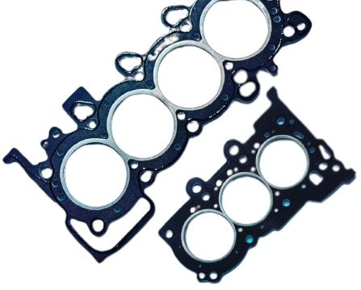

Bem vindo à Global Juntas!
Líder em fabricação e comercio de juntas e peças automotivas.
Confira a nossa mais recente linha de juntas para cabeçote GLOBAL+. Desenvolvida com alto padrão de qualidade e seguindo os padrões de fábrica, os modelos GLOBAL+ são feitos originalmente sob medida para o seu motor. Fabricação adaptada para longevidade da vida útil de seu motor possibilitando a utilização prolongada de cabeçotes retificados (rebaixados) devido sua maior espessura que compensa a retifica gerada em seu bloco modificado. Não deixe de conferir a nossa linha completa.
Faça um orçamento ou tire suas dúvidas.
Siga a Global Juntas nas redes sociais.
O que são juntas automotivas e para que servem?
As juntas automotivas são componentes essenciais em motores de veículos e têm a função de garantir a vedação entre as peças, especialmente nas partes onde ocorre a passagem de fluidos ou gases. Elas são projetadas para suportar altas temperaturas e pressões, além de resistir à corrosão e aos produtos químicos presentes no motor.
- As principais funções das juntas automotivas incluem:
- Vedação: As juntas são responsáveis por garantir que não ocorra vazamento de fluidos ou gases em áreas críticas do motor, como cabeçotes, cárter, coletor de admissão e escape, entre outras. Elas impedem a mistura de óleo, água, gases de escape e outros líquidos ou gases, mantendo o funcionamento correto do motor.
- Absorção de vibrações: As juntas ajudam a absorver as vibrações e choques gerados pelo funcionamento do motor, evitando o desgaste prematuro das peças e reduzindo o ruído e as vibrações transmitidas para o resto do veículo.
- Isolamento térmico: As juntas também podem atuar como isolantes térmicos, ajudando a manter a temperatura adequada em diferentes partes do motor. Isso é especialmente importante em áreas onde o calor é gerado em excesso, como no cabeçote do motor.
- Compatibilidade química: As juntas automotivas são projetadas para serem compatíveis com os líquidos e gases presentes no motor, evitando a degradação prematura e garantindo a durabilidade do sistema de vedação.
Fabricação de retentores e vedadores de haste da válvula.
 @global_juntas
@global_juntas
contato@globaljuntas.com.br